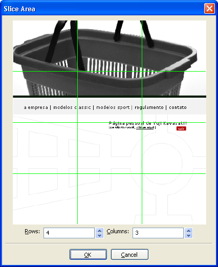
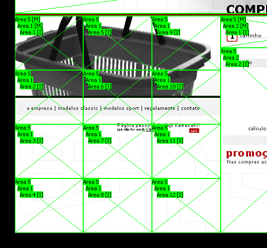

The "Grid Slice" tool is used to slice an area into a number of rows and columns. To use it, right-click on an area and select "Grid slice".

Enter the desired number of rows and coluns for the slicing.
![[Warning]](images/warning.png) | Warning |
|---|---|
If the selected area is not of "Mask" kind, it will be automatically set to it. |
